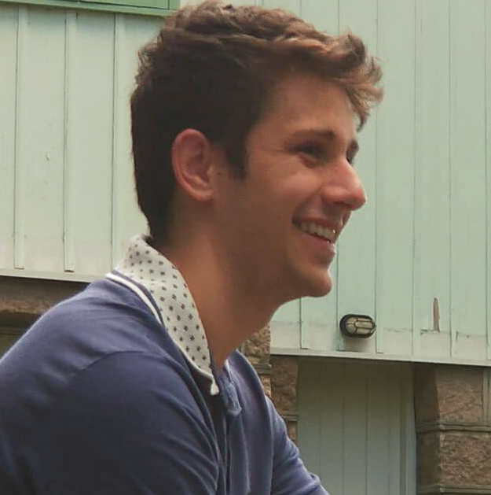

O blog
O Asimblog é uma página voltada para conteúdo técnico relacionado a área de computação, eletrônica e sistemas embarcados.
O objetivo é apresentar os pormenores da tecnologia aos entusiastas, fornecer e detalhar os projetos desenvolvidos para os profissionais e hobbystas da área e discutir o estado da arte com profissionais experientes do setor.
O autor
 Olá, Bem-vind@ ao Asimblog, eu sou André Machoski, estudante de engenharia elétrica pela Universade Federal do Paraná (UFPR), durante a graduação participei de projetos dentro da Universidade voltados para microeletrônica, em conjunto com o grupo GICS, eficiência energética com o grupo multidisciplinar Eco Octano e de monitoramento de energia com o laboratório de geração distribuida. Minhas áreas de interesse são programação de firmware, engenharia de machine learning, segurança de sistemas embarcados e café, é claro. Para mais informações, veja meu linkedin: